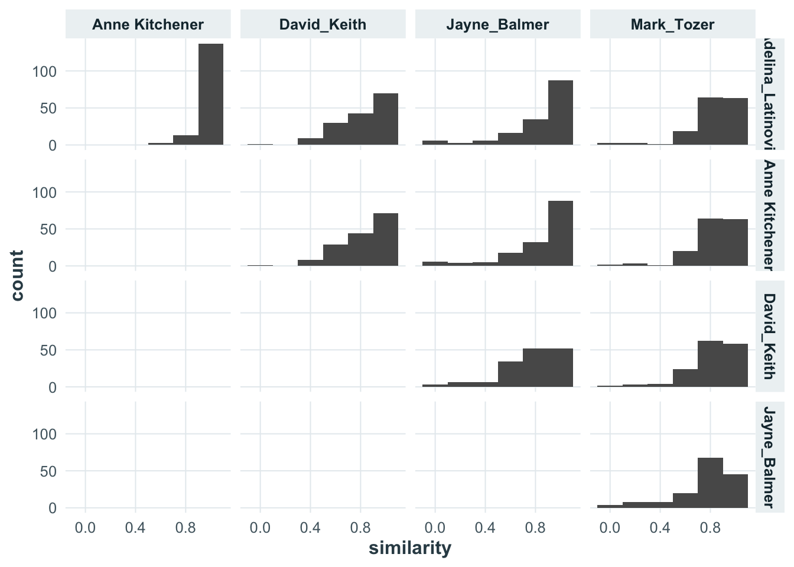
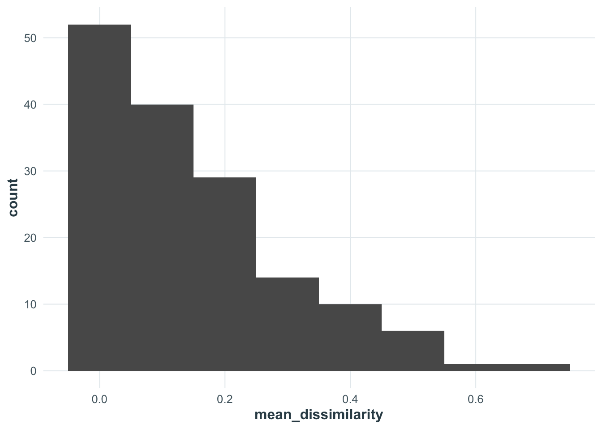
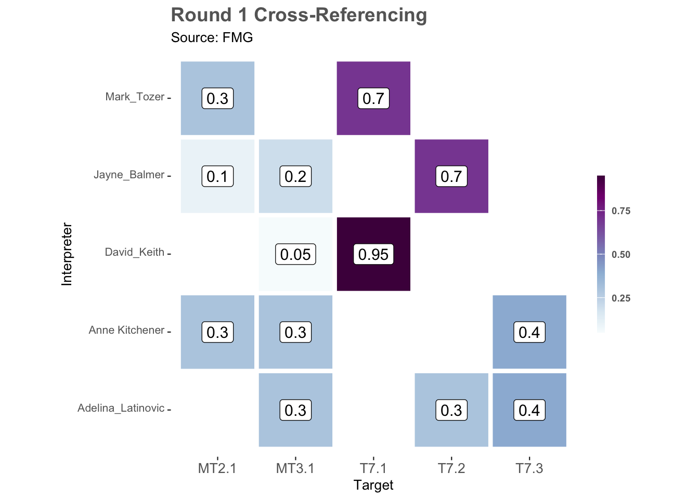
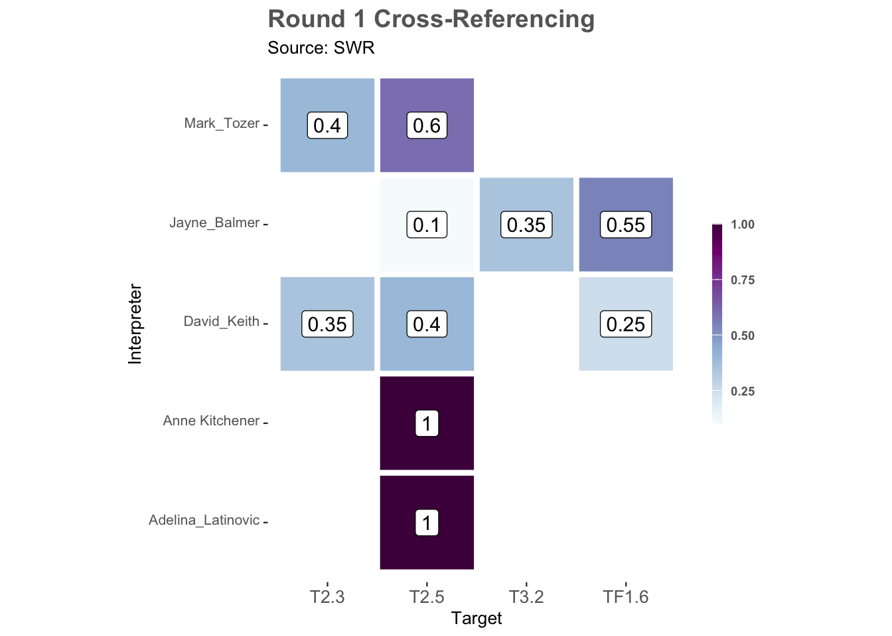

library(readr)
library(dplyr)
library(ecoSynthesis)
library(ggplot2)
here::i_am("analysis/round-1.qmd")
output_dir <- here::here("../results/XREFs")
source(here::here("../scripts/setup.R"))
source(here::here("../scripts/functions.R"))
load(here::here(output_dir, "lookup-tables.rda"))
load(here::here(output_dir, "memb-tables.rda"))9 Round two
Our setup for this R session is:
9.1 Pairwise dissimilarity
Calculate pairwise dissimilarities
TASVEG_revised <- filter(TASVEG_clean, round == 2)
(pd <- pairwise_dissimilarity(TASVEG_revised))# A tibble: 1,530 × 6
VEGCODE expert_a expert_b dissimilarity similarity pair
* <chr> <chr> <chr> <dbl> <dbl> <chr>
1 AAP Adelina_Latinovic Anne Kitchener 0 1 Adelina_La…
2 AAP Adelina_Latinovic David_Keith 0.2 0.8 Adelina_La…
3 AAP Adelina_Latinovic Jayne_Balmer 0 1 Adelina_La…
4 AAP Adelina_Latinovic Mark_Tozer 0.1 0.9 Adelina_La…
5 AAP Anne Kitchener David_Keith 0.2 0.8 Anne Kitch…
6 AAP Anne Kitchener Jayne_Balmer 0 1 Anne Kitch…
7 AAP Anne Kitchener Mark_Tozer 0.1 0.9 Anne Kitch…
8 AAP David_Keith Jayne_Balmer 0.2 0.8 David_Keit…
9 AAP David_Keith Mark_Tozer 0.2 0.8 David_Keit…
10 AAP Jayne_Balmer Mark_Tozer 0.1 0.9 Jayne_Balm…
# ℹ 1,520 more rowsplot_pairwise_diss(pd) +
theme_wp3()
efg_order <- sort(unique(TASVEG_revised$EFG))
membership_matrix <- profiles |>
tidyr::pivot_wider(names_from = efg, values_from = memb) |>
dplyr::select(VEGCODE, expert, dplyr::any_of(efg_order)) |>
dplyr::arrange(VEGCODE, expert)
message(
nrow(membership_matrix),
" rows (unit × expert) × ",
length(efg_order),
" target columns. ",
"NA = target not used by any expert for that unit; 0 = used by another expert but not this one."
)
head(membership_matrix, 12)9.2 Pairwise expert distances for each unit.
sid <- rlang::sym(attr(pd, "source_id"))
unit_disagreement <- pd |>
dplyr::group_by(!!sid) |>
dplyr::summarise(
mean_dissimilarity = mean(dissimilarity),
min_dissimilarity = min(dissimilarity),
max_dissimilarity = max(dissimilarity),
n_pairs = dplyr::n(),
.groups = "drop"
) |>
dplyr::arrange(dplyr::desc(mean_dissimilarity), VEGCODE)
msg <- "%s of %s units have identical profiles from every interpreter."
message(
sprintf(
msg,
sum(unit_disagreement$max_dissimilarity < 0.001),
nrow(unit_disagreement)
)
)31 of 153 units have identical profiles from every interpreter.head(unit_disagreement, 10)# A tibble: 10 × 5
VEGCODE mean_dissimilarity min_dissimilarity max_dissimilarity n_pairs
<chr> <dbl> <dbl> <dbl> <int>
1 FMG 0.725 0.3 1 10
2 SWR 0.56 0 0.9 10
3 FSM 0.52 0 1 10
4 SBR 0.52 0 1 10
5 AHL 0.518 0 0.9 10
6 SMP 0.49 0.3 0.9 10
7 FWU 0.475 0 0.8 10
8 ARS 0.465 0 1 10
9 NLA 0.445 0 0.9 10
10 SRH 0.44 0 1 10ggplot(unit_disagreement, aes(x = mean_dissimilarity)) +
geom_histogram(binwidth = 0.1) +
theme_wp3()
9.3 Visualising
This source unit had the highest dissimilarity:
TASVEG |>
dplyr::filter(VEGCODE == "FMG") |>
dplyr::glimpse()Rows: 1
Columns: 4
$ VEG_GROUP <chr> "Agricultural, urban and exotic vegetation"
$ VEGCODE <chr> "FMG"
$ VEGCODE_D <chr> "(FMG) Marram grassland"
$ eligible <lgl> TRUEdplyr::filter(TASVEG_revised, VEGCODE == "FMG") |>
membership_tile_plot()
TASVEG |>
dplyr::filter(VEGCODE == "SWR") |>
dplyr::glimpse()Rows: 1
Columns: 4
$ VEG_GROUP <chr> "Scrub, heathland and coastal complexes"
$ VEGCODE <chr> "SWR"
$ VEGCODE_D <chr> "(SWR) Western regrowth complex"
$ eligible <lgl> TRUEdplyr::filter(TASVEG_revised, VEGCODE == "SWR") |>
membership_tile_plot()
9.4 Generate a membership matrix
TASVEG_mtx <- membership_matrix(TASVEG_revised)
TASVEG_mtx<membership_matrix> 153 sources x 31 targets x 5 interpreters• Adelina_Latinovic: 153 source units assessed• Anne Kitchener: 153 source units assessed• David_Keith: 153 source units assessed• Jayne_Balmer: 153 source units assessed• Mark_Tozer: 153 source units assessedUse `unclass(data)[source, target, interpreter]` to view values.TASVEG_mtx[1:4, , "Adelina_Latinovic"] target
source F2.2 F2.3 F2.4 F2.8 F3.1 F3.3 MFT1.3 MT2.1 MT2.2 MT3.1 T2.3
AAP 0.0000000 0.0000000 0 0 0 0 0 0 0 0 0
AHF 0.3333333 0.3333333 0 0 0 0 0 0 0 0 0
AHL 0.0000000 0.0000000 0 0 0 0 0 0 0 0 0
AHS 0.0000000 0.0000000 0 0 0 0 1 0 0 0 0
target
source T2.4 T2.5 T2.6 T3.2 T3.4 T4.4 T4.5 T6.4 T7.1 T7.2 T7.3 T7.4 T7.5 TF1.1
AAP 0 0 0 0 0 0 0 0 0 0 0 0 0 0
AHF 0 0 0 0 0 0 0 0 0 0 0 0 0 0
AHL 0 0 0 0 0 0 0 0 0 0 0 0 0 0
AHS 0 0 0 0 0 0 0 0 0 0 0 0 0 0
target
source TF1.2 TF1.3 TF1.4 TF1.5 TF1.6 TF1.7
AAP 0 0.0000000 0 0 0 1
AHF 0 0.3333333 0 0 0 0
AHL 0 1.0000000 0 0 0 0
AHS 0 0.0000000 0 0 0 0